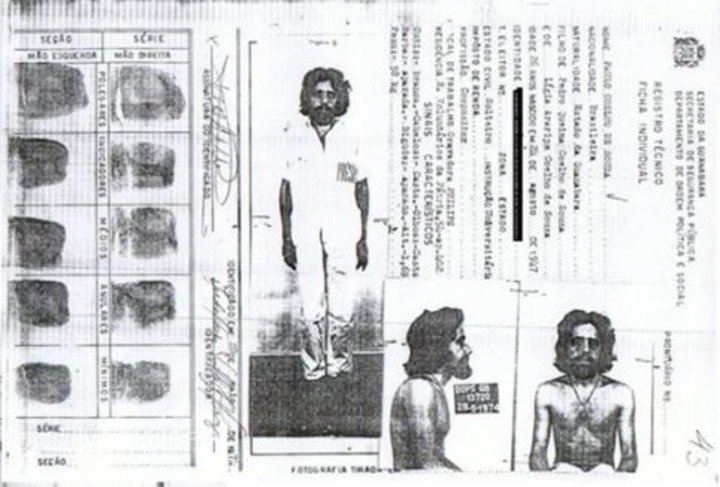
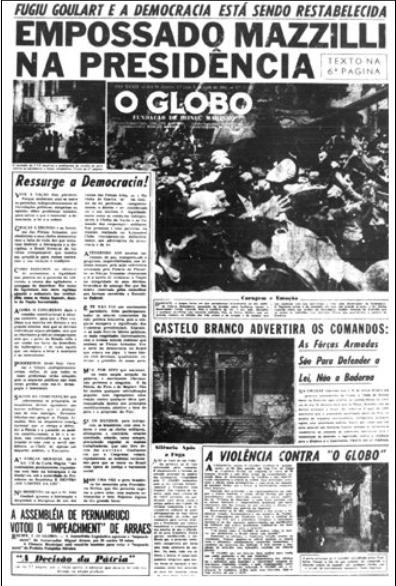

Após anunciada as Reformas de Base, pelo então presidente João Goulart, os setores conservadores da sociedade brasileira protestaram contra o governo, dizendo que a medida proposta seria uma forma de implantar o comunismo no Brasil.
Dias depois ocorreu a Marcha da Família com Deus pela Liberdade. Em 31 de março, os militares, com o apoio dos Estados Unidos, deram início a um golpe de Estado.
Por trás do Golpe de 1964, havia muitos interesses envolvidos, a exemplo dos latifundiários, empresas estrangeiras instaladas no país, e sobretudo os setores das Forças Armadas.
A participação dos Estados Unidos fora também de suma importância, pois garantiram que dariam respaldo militar e econômico ao Brasil, atiçando a conspiração entre os militares e os empresários.
Então em 31 de março, as tropas saem de Minas Gerais, em direção para o Rio de Janeiro, prontas para concluir o golpe.
Sobretudo, o movimento militar procurou se institucionalizar, e utilizava-se do argumento de que estava lutando para livrar o Brasil da "ameaça comunista".
Desde o início, a Ditadura já assumira sua face malígna, e com a adesão dos Atos Institucionais, o golpe estava nítido. Sempre houvera pessoas que foram contra, que disseram não a Ditadura, mas a repressão era constante. Pessoas desapareciam, muitas foram torturadas, e outras tiveram que se exilar em outros países para sua sobrevivência.

O papel da imprensa na construção da memória sobre o regime
A imprensa fora de suma importância para a caída de João Goulart, sobretudo dera respaldo a todo cenário que compreendera o regime militar, às vezes intermediando a informação como uma forma de interlocutores, mas criticando também quando não eram a favor de algumas políticas, a exemplo dos impasses que houvera com o governo Geisel, quando a imprensa havia demonstrado maior afinidade e interesse em uma política liberal.
Os jornais nunca chegaram a romper, de fato, com o Regime Militar.
Para forjar a opinião pública e para pautar temas da política, tentando influenciar as decisões parlamentares, os liberais no Brasil sempre utilizaram da imprensa como via de mão dupla.
Logo, a imprensa brasileira poderia ser qualificada como parte da tradição do "autoritarismo de crise".
Mas as diferenças entre os jornais, não devem ser deixadas de lado. A exemplo de João Goulart, os jornais encontravam-se mais divididos. Então o fato de se assumirem liberais não anula as suas diferenças.
Houve periódicos que aplaudiram por muito tempo o Regime, Como o Correio da Manhã e o Jornal do Brasil, caindo de fato, só em 1980.
Estes, eram herdeiros de um liberalismo elitista e oligárquico.
É importante ressaltar a importância da construção da memória sobre o período, pois ajudou a veicular imagens hegemônicas de longa duração sobre a Ditadura, mas também construiu uma imagem de heroísmo.
Analisando, sobretudo, os jornais "Jornal do Brasil", "O Globo", "Folha de São Paulo" e "O Estado de São Paulo", percebe-se a enorme influência entre empresariado e classe média, interlocutando a sociedade com o regime.
Uma das interpretações acerca da imagem que estes jornais representavam, fora feito por Francisco Fonseca, que descrevera o Jornal do Brasil com um liberalismo inconsequente, enquanto o Globo assumia uma posição de governismo inveterado, a Folha de São Paulo era caracterizado por uma volatilidade ideológica e por fim, o Estado de São Paulo assumia uma imagem altamente doutrinatária, uma espécie de liberalismo positivista.
Embora os jornais citados apoiavam o Regime, por vezes faziam críticas em nome de seus interesses.
As notícias do golpe foram retratadas como "Revolução" e "Movimento", demonstrando o viés ideológico daquela classe formada por liberais, que inclusive posteriormente continuou retratando os fatos históricos conforme mandavam seus interesses, compactuando com a disseminação de um discurso autoritário, a fim de deixar uma memória deveras torta dos acontecimentos duranque esse período.
Durante os anos de chumbo, os editoriais se referiam ao regime com elogios, argumentavam que o caos havia sido tomado pela ordem.
Embora décadas depois alguns editoriais tenham se arrependido, e ao final da Ditadura tenham se afastado dessa ideologia, o importante é destacar o papel que estes jornais e a mídia desempenharam naquele momento de contrução de memória, e como isso tem nos afetado até hoje, pois muitos foram os presos políticos, além das pessoas que foram mortas, e esse passado acaba passando despercebido, quando deveria ter seus crimes punidos. Pior, o que vemos de algumas imagens públicas, como Bolsonaro, atual presidente, é afeição por esse tipo de governo, a lembrar de quando participou do impeachment de Dilma e citou o coronel Brilhante Ustra, dizendo que era o terror da ex presidenta. Ustra fora um dos coroneis que mais torturou e matou durante a Ditadura, e ações desse tipo devem ser repudiadas e questionadas.

A ditadura militar e o ensino de História
Tendo em vista que a mídia omitiu muita parte desse passado referente a Ditadura, isso acabou refletindo no ensino de História, pois muitas pessoas desconhecem esse passado de mortes, torturas, perseguições, graças aquela imagem branda proferida pela mídia, que nunca quis uma democracia, muito menos acabar com corrupção, mas sim manter seu poder intacto.
Se grande parte da população desconhece o seu passado, isso diz respeito também ao apagamento feito pela mídia, além do descaso com a educação, a exemplo da história omitida dos livros didáticos, fazendo com que a população não tenha acesso a seu passado, alterando sua memória acerca de um período nefasto.
É necessário resgatar esse passado, despertar a consciência histórica, a crítica, para que o/a aluno/a tome consciência sobre os governos autoritários, quais suas consequências para a sociedade, saber detectar suas semelhanças com governos atuais, que menosprezam a vida em detrimento de suas ganâncias.
Ademais, o conhecimento em História contribui para a reflexão e compreensão do mundo e da sociedade. Tendo esse direito à educação negado, os cidadãos acabam não exercendo, de fato, a sua cidadania.
O ensino de História não pode ser negligenciado, muito menos seu passado ocultado, restando ao professor historiador a tarefa de despertar o interesse de seus/suas alunos/alunas em conhecer mais sobre como se dá o funcionamento da sociedade, qual a importância desse passado para a compreensão do presente, perceber como a história muitas vezes se repete, e claro, lembrar que a educação é nossa luz contra quaisquer tipos de fascismo.